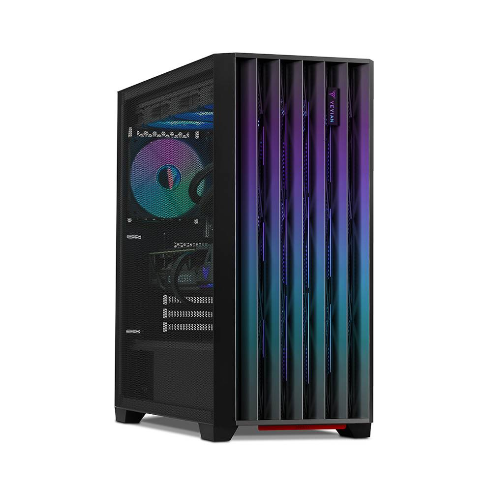

| Produto | Descrição | ㅤㅤㅤㅤㅤㅤㅤㅤㅤ |
|---|---|---|
 |
Ecrã Super Retina XDR de 6.1 polegadas Sistema de câmara avançado para fotos perfeitas em qualquer luz ambiente Modo Cinematográfico agora em 4K Dolby Vision até 30fps Modo Ação para gravar vídeos mais suaves com a câmara à mão Tecnologia de segurança vital: Deteção de acidente1 que pede ajuda sempre que não o conseguir fazer Bateria para todo o dia e até 20 horas de vídeo3 Processador A15 Bionic com GPU 5-core para um desempenho ultrarrápido. Rede móvel |
|
Processador: AMD Ryzen™ 7 7435HS 8-Core, 3.10 GHz com Turbo até 4.5 GHz, 20 MB Cache Sistema Operativo: Windows 11 Home Memória RAM: 16GB (2x8GB) DDR5-5600MHz 2 x Slots SO-DIMM (ocupados) p/ expansibilidade total até 32GB Ecrã: 15.6", FHD (1920 x 1080), 16:9, 144Hz, Nível IPS, Anti-Glare, NTSC 45%, SRGB 62.5%, 250nits, Adaptive Sync Placa Gráfica: NVIDIA® GeForce RTX™ 3050 4GB GDDR6 Armazenamento: SSD 512GB PCIe® 4.0 NVMe™ M.2 WebCam: 720P HD Comunicações: Wi-Fi 6(802.11ax) (Dual band) 2x2 + Bluetooth® 5.3 |
||
Processador: AMD Ryzen™ 7 7435HS 8-Core, 3.10 GHz com Turbo até 4.50 GHz, 20 MB Cache Sistema Operativo: Sistema Operativo não incluído Memória RAM: 16GB (2x8GB) DDR5-4800MHz 2 x Slots SO-DIMM (ocupados) p/ expansibilidade total até 32GB Ecrã: 15.6", FHD (1920 x 1080), 16:9, 144Hz, Nível IPS, Anti-Glare, NTSC 72%, SRGB 100%, 250nits, G-Sync Placa Gráfica: NVIDIA GeForce RTX 4060 8GB GDDR6 Armazenamento: SSD 512GB PCIe® 4.0 NVMe™ M.2 WebCam: 720P HD Comunicações: Wi-Fi 6 (802.11ax) (Dual band) 2x2 + Bluetooth® 5.3 |
||
Processador: Intel Core i7-12700F (12ª Geração) "Alder Lake" 12-Core 1.6GHz c/Turbo 4.9GHz 25MB Cache Skt1700 Sistema Operativo: Windows 11 Pro Chipset: MSI B760M Memória RAM: 32GB (2x16GB) UDIMM DDR5-5600MHz 2 x Slots UDIMM (ocupados) p/ expansibilidade total até 64 GB Armazenamento: SSD 1TB M.2 2280 PCIe® 3.0x4 NVMe® Placa Gráfica: NVIDIA® GeForce RTX™ 4060 Ti GDDR6 (Asus) Comunicações sem Fios: Wi-Fi® 6, 11ax 2x2 + Bluetooth 5.2 |
||
|  | Processador: Intel Core i9-14900KF (14ª Geração) "Raptor Lake Refresh" 24-Core 2.4GHz c/Turbo 6.0GHz 36MB Cache Skt1700 Sistema Operativo: Windows 11 Pro Chipset: MSI Z790 P WiFi Memória RAM: 64GB (4x16GB) UDIMM DDR5-6000MHz 4x Slots UDIMM (ocupados) Armazenamento: SSD 2TB M.2 2280 PCIe® 4.0x4 NVMe® Placa Gráfica: NVIDIA® GeForce RTX™ 4090 GDDR6X (MSI) Comunicações sem Fios: Wi-Fi® 6, 11ax 2x2 + Bluetooth 5.2 |